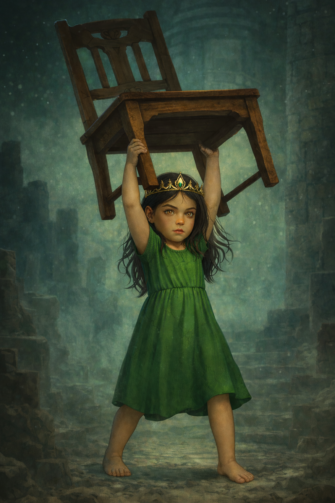

Profile
Annastara is six years old at her introduction in Book II. She bears dark hair and a light complexion, with eyes unmistakably her mother’s. Subtle but clear signs suggest she has inherited more than lineage—there are echoes of Vear’s legacy in her strength and intelligence.
Abilities
Physical Aptitude: Displays strength well beyond age norms, reflecting traits linked to Vear’s high-gravity heritage.
Cognitive Insight: Learns quickly, discerns patterns, and adapts with unusual ease—early markers of exceptional intelligence.
Narrative Role
Annastara is introduced in Book II as a living bridge between Vear’s legend and the uncertain future of Edson. Her abilities remain understated at first reveal, preserving mystery while hinting at her importance in the unfolding story.
Codex (In-Universe)
“ANN-ST-2: Provisional. Minor—offspring of Subject VE-AR and AL-RA. Monitor for non-baseline growth in strength and cognition. Public disclosure deferred until post-Authority review.”